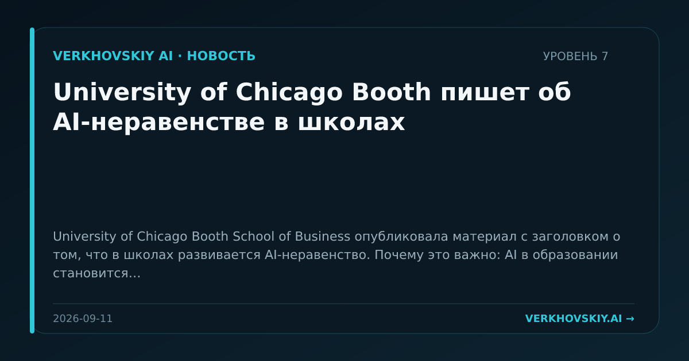

University of Chicago Booth пишет об AI-неравенстве в школах
University of Chicago Booth School of Business опубликовала материал с заголовком о том, что в школах развивается AI-неравенство. Почему это важно: AI в образовании становится вопросом распределения преимуществ и рисков между группами учеников. Для СРТ это сигнал, что будущая профессиональная структура будет зависеть не только от наличия AI, но и от качества доступа к нему.